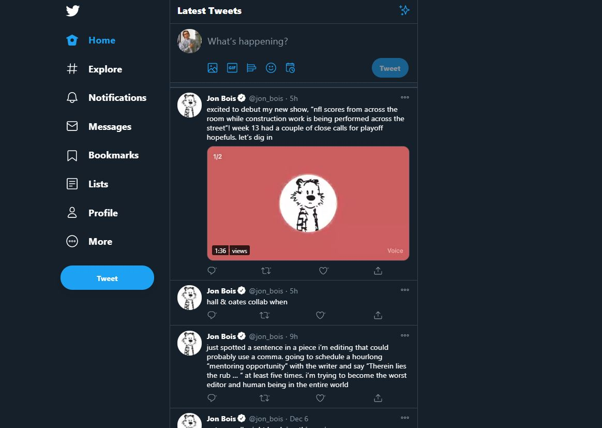

Twitter is pretty bad. But, it's the only place with
Jon Bois
tweets. Here are a couple ways you can make Twitter Suckless.
---
# Remove Homepage Crap
The Twitter "What's Happening" sidebar is dedicated to drama and stuff intended to make you angry. To remove
this, you'll need
uBlock origin (which is something you
should have installed if you want a more suckless internet in general). Once you have it installed, go to
the
dashboard add the
following under the "My filters" tab:
twitter.com##.r-1hycxz.r-zso239.r-aqfbo4.css-1dbjc4n
# Denumerate
As
Ben Grosser writes:
Visible metrics can make us feel more compulsive, competitive, and anxious. Further—without realizing
it, we craft rules for ourselves based on what the numbers say, and these rules affect what we post, who
we friend, and which posts we “like.”
He's written a tool to remove all metrics (likes, retweets, replies, followers, etc.) which you can install
through one sources
linked
here. I am personally using
Tapermonkey.
# Remove Interests
Twitter keeps track of what it think's you're interesting in, then uses it to show you "relevant" tweets
(and ads). You can manually prune these
here, but the list can get
very long, very quick. You can automate "un-intersting" all topics by pasting
Ed Johnson-Williams' script in
console:
"use strict;"
var labelSelector = ".r-1p0dtai.r-1ei5mc7.r-1pi2tsx.r-1d2f490.r-crgep1.r-orgf3d.r-t60dpp.r-u8s1d.r-zchlnj.r-ipm5af.r-13qz1uu"
// Get all the interests that Twitter has inferred about your account
var interests = Array.from(document.querySelectorAll(labelSelector));
console.log(`${interests.length} total interests found`);
var checkedInterests = 0;
console.log(`Starting…`);
// For each of those interests, if it's selected, uncheck the checkbox
interests.forEach((interest) => {
if (interest.checked) {
checkedInterests++
interest.click();
console.log(`${checkedInterests} of ${interests.length}`)
}
});
console.log(`Finished`);
# Remove Sugguested Content
Under the
muted keywords section, you paste
Jake
Bellacera's script to automatically add sugguest content keywords to the blocklist, cleaning up your
timeline.
const delayMs = 500; // change this if you feel like its running too fast
const keywords = `ActivityTweet
generic_activity_highlights
generic_activity_momentsbreaking
RankedOrganicTweet
suggest_activity
suggest_activity_feed
suggest_activity_highlights
suggest_activity_tweet
suggest_grouped_tweet_hashtag
suggest_pyle_tweet
suggest_ranked_organic_tweet
suggest_ranked_timeline_tweet
suggest_recap
suggest_recycled_tweet
suggest_recycled_tweet_inline
suggest_sc_tweet
suggest_timeline_tweet
suggest_who_to_follow
suggestactivitytweet
suggestpyletweet
suggestrecycledtweet_inline`.split(/\W+/);
const nativeInputValueSetter = Object.getOwnPropertyDescriptor(window.HTMLInputElement.prototype, "value").set;
const addMutedKeyword = keyword => {
const input = document.querySelector("[name='keyword']");
nativeInputValueSetter.call(input, keyword);
input.dispatchEvent(new Event('input', { bubbles: true }));
document.querySelector("[data-testid='settingsDetailSave']").click();
}
const delay = () => {
return new Promise(res => setTimeout(res, delayMs));
};
keywords.reduce(async (prev, keyword) => {
await prev;
document.querySelector("a[href='/settings/add_muted_keyword']").click();
await delay();
addMutedKeyword(keyword);
return delay();
}, Promise.resolve());
---
In the end, you should get something less distracting and more focused on the content you enjoy. For
example, here's my new homepage:
